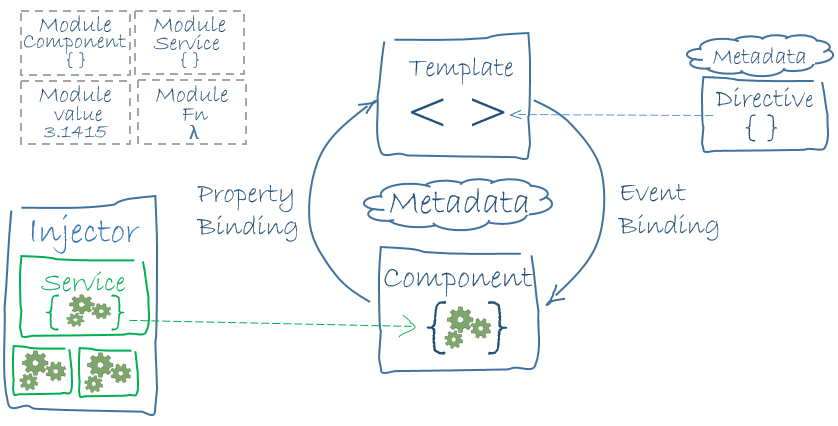

Angular 2
Magnus Gudmundsson
CyberDaDa
The Future
Started yesterday
And We Are Already Late
The Past...
You may ask yourself, how did We get here?
Why Angular ?
Building a modern front end can be hard
Angular is a framewwork to help us build client applications in HTML and JavaScript
With Angular you get
- MVC done right
- + Easy data binding
- + Routing
- + Clientside filtering
- + A nice way to build your application
- === Less code to write
Why #2 ?
“A framework that cannot work with Web Components, bogs down on mobile or continues to push its own module and class API against the standards, is not going to last long."
The Angular team's answer to these problems is a new version: Angular 2.0.
Angular 2 is essentially a re-imagining of AngularJS for the modern web, taking into account everything that has been learned over the last five years.”
http://eisenbergeffect.bluespire.com/all-about-angular-2-0/How soon is now?
Goals
The Fastest JS framework available --> Benchpress
Fast and Smooth--> Webworkers
Mobile first Possibilities to build separate renderers for IOS/Android etc.
Simpler syntax
More Goals
Modular Almost every piece of Angular2 should be optional, replaceable, and even used in other non-AngularJS frameworks.
Server Side Rendering
Compile as a build step Angular apps parse and compile their HTML templates. initial rendering to be speeded up by moving the compile step into the build process.
Hello Angular World
https://angular.io/resources/live-examples/quickstart/ts/plnkr.html
import {Component} from '@angular/core';
// Annotation section
@Component({
selector: 'my-app',
template: 'Hello {{name}}
'>
})
// Component controller
export class AppComponent {
name: string;
constructor() {
this.name = 'World';
}
}
TypeScript
Javascript With all the syntactic sugar you can eat
Ecmascript 6 (or ES6 or ES2015)
The latest version of the ECMAScript standard
The first update to the language since ES5 (2009)
Major features include Classes, Modules, "The Fat arrow",
Let -> a block scoped binding construct and much more
Ecmascript 6 - Resources
http://es6-features.org/ https://github.com/lukehoban/es6featuresTypeScript
TypeScript syntax includes all the features of Ecmascript 6
+ type checking, interfaces, generics, enums and decorators.
TypeScript
TypeScript classes are straight-forward, very similar to ES6 classes.
All members are public by default, but members can be marked as private.
This is enforced at the compiler level, not in the output JavaScript source.
TypeScript - Resources
www.typescriptlang.org
Angular 2
Building Blocks
- Module
- Component
- Directives
- Services
- Pipes ( same as Angular filters)
- Template
- Metadata
Modules
Import/Export
Library Modules
View defined in a template
+
Logic defined in a class
@Decorated with metadata about the component
=
Component
Components
The basic building block of all Angular 2 Applications
A component controls a portion of the screen — a view — through its associated template.
Every Angular App has at least one root component
Most Angular Apps are component trees tied to external resources through services that are injected to it.
import {Component} from '@angular/core';
// Annotation section
@Component({
selector: 'my-app',
template: 'Hello {{name}}
'>
})
// Component controller
export class AppComponent {
name: string;
constructor() {
this.name = 'World';
}
}
@Component : A decorator, metadata about the component; name of selector, Html template(s), style template(s), properties, events , dependencies on other components etc
<html>
<head>
Angular 2 Hello Worldy
</head>
<body>
Template
{{letter}}
Moves Left : {{nrOfMoves}}
{{letter}}
_
Directives
@Directive({
selector: '[tooltip]',
inputs: [ 'text: tooltip' ],
host: {
'(mouseenter)': 'onMouseEnter()',
'(mouseleave)': 'onMouseLeave()'
}})
class Tooltip {
text:string;
overlay : Overlay; // NOT YET IMPLEMENTED
overlayManager : OverlayManager; // NOT YET IMPLEMENTED
constructor( overlayManager : OverlayManager) {
this.overlay = overlay;
}
onMouseEnter() {
// exact signature to be determined
this.overlay = this.overlayManager.open(text, ...);
}
onMouseLeave() {
this.overlay.close();
this.overlay = null;
}}
import {Tooltip} from 'tooltip';
@Component({
selector: 'my-component',
template: `Hello, {{message}}`,
directives: [Tooltip]
})
class MyComponent {
constructor() {
this.message = 'World';
}}
When a component uses a directive or another component, these are added to the array of directives specified in the decorator.
When a component uses a service, it is added to the array of providers.
Services (The injectables)
import {Injectable} from '@angular/core';
import {Http} from '@angular/http';
@Injectable()
export class UserService {
constructor(private http:Http) {}
getById(id:string): any {
return this.http.get('api/users/' + id)
.map(res=> res.json());
}
Pipes
Pipes are used to transform/massage data.
Input goes into the pipe and is transformed to a desired output.
There are a couple of built-in pipes such as DatePipe, UpperCasePipe, LowerCasePipe, CurrencyPipe, PercentPipe, AsyncPipe
We add parameteres to a pipe by following the pipe name with a colon:
Your is {{ birthday | date:"yyyy-MM-dd }}
Custom Pipes
import { Pipe, PipeTransform } from '@angular/core';
/*
* Raise the value exponentially
* Takes an exponent argument that defaults to 1.
* Usage:
* value | exponentialStrength:exponent
* Example:
* {{ 2 | exponentialStrength:10}}
* formats to: 1024
*/
@Pipe({name: 'exponentialStrength'})
export class ExponentialStrengthPipe implements PipeTransform {
transform(value: number, exponent: string): number {
let exp = parseFloat(exponent);
return Math.pow(value, isNaN(exp) ? 1 : exp);
}
}
The Big Picture
 https://angular.io/docs/ts/latest/guide/architecture.htmlThe Big Picture
We write applications by composing HTML templates with Angularized-markup, writing component classes to manage those templates, adding application logic in services and handing the top root component to Angular's bootstrapper
How to start coding ?
- NodeJS
- TypeScript
- A web server - Lite-Server works nice
- Editor - I use Visual Studio Code. WebStorm, Sublime and Atom also work.
goto
https://nodejs.org/en/download
install node
open a command window and type the following
npm install typescript -g
npm install lite-server -g
install Visual Studio Code
https://code.visualstudio.com/
create a folder for your project
open the folder in the editor and start coding
Can you be more specific?
This is the official quickstart: http://angular.io/docs/ts/latest/quickstart.html
And here is my less explanatory more compact version https://github.com/Cyberdada/Angular2Workshop/wiki/Setup,-Startup